イギリスや北欧との交易都市として中世に栄華をきわめた運河の街ブルージュ。 海から10km以上離れた地形ゆえに運河に土砂が堆積し、15世紀以降街は一気に衰退しその地位をアントウェルペンに奪われていくが、 19世紀に運河が再生され水の都として復活することになる。
5月の鮮やかな緑と陽光が降り注ぐ運河に古びたレンガの街並みが映り込む。 この日の空には黒雲が入り混じりその影が古い街並みをいっそう引き立てていた。
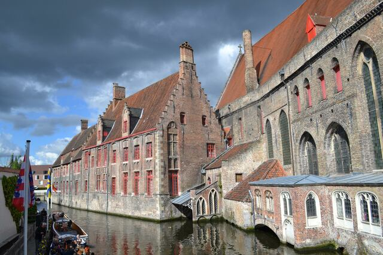
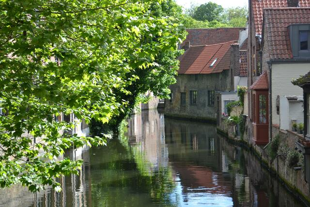
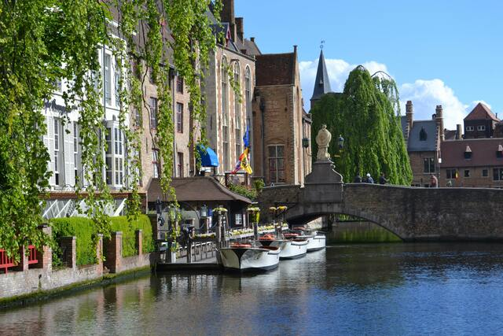
大交易時代に毛織物交易の結節点として黄金時代を築いたアントウェルペン。 その後は西欧世界の資本主義経済を支える金融都市として発展することになり、貨幣論を趣味でやっていると西洋経済史によく登場する。 重商主義を象徴するがごとく立ち並ぶギルトハウス。 荘厳ながらもどこか統一性に欠ける街並みはここがかつて人々の交差する国際交易の要衝だったことを物語る。
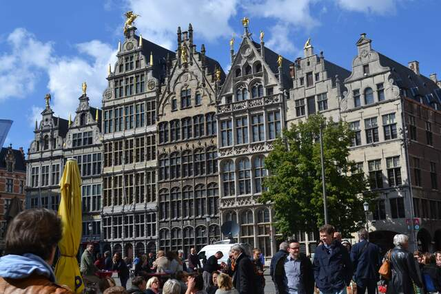
ブルージュが運河の土砂の堆積で衰退し交易都市としての地位がアントウェルペンに移っていった・・・という世界史の流れは実際にこの場に立つとよくわかる。 ブルージュが海から10km以上離れた場所に人口運河を建設しているのに対して、アントウェルペンは大型船舶が航行可能な河口に面しており、 アントウェルペンが圧倒的に地政学的に有利だったことが伺える。
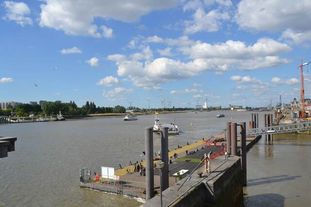
世界の美しい駅ランキングで常連のアントウェルペン中央駅。大きなドーム状の石造りの駅舎には天井まで精巧な装飾が施されていて美術館さながら。
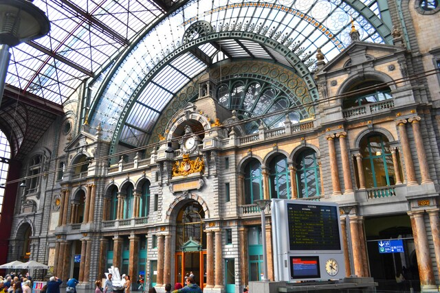
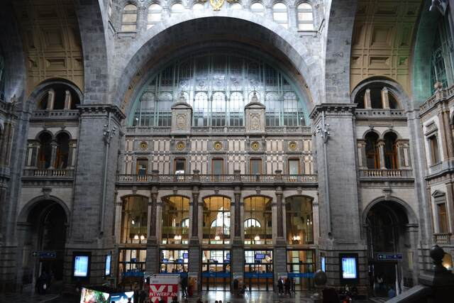
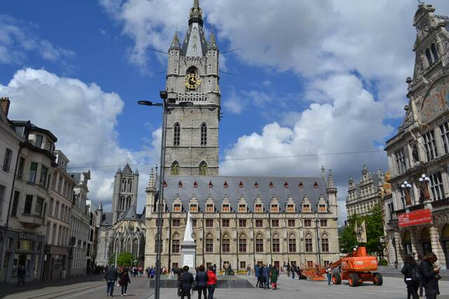
緑深いウルト渓谷にすっぽりと包まれるように佇む小さな町デュルビュイ。 この街には電車が通っておらず、4kmほど離れたBarvauxという小さな田舎駅から山越えをして歩いていった。 新緑が萌えるワロン地方の穏やかな丘と森を通り抜けていく道のりが心地よい。
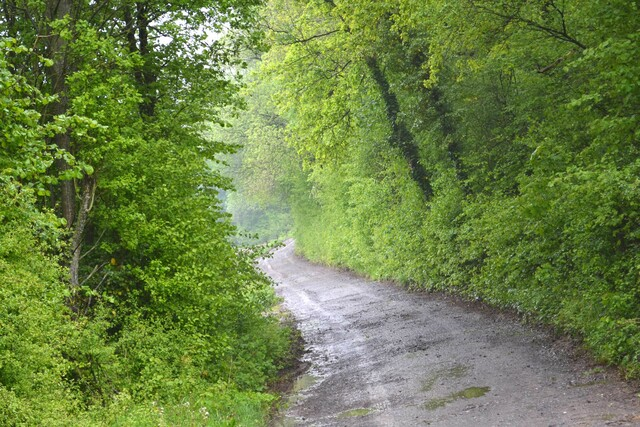
丘の上から眺めたデュルビュイの街並み。
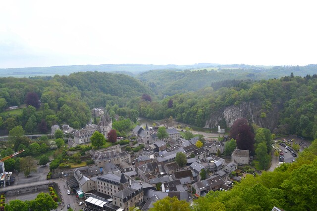
絹のような霧雨に石畳の路地がしっとりと染まり、あたりは中世のまま時間が止まったかのように静かで、まるで絵本の世界に迷い込んだよう。 裏路地の美しさが完璧すぎる。
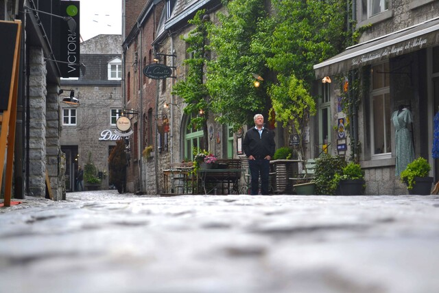
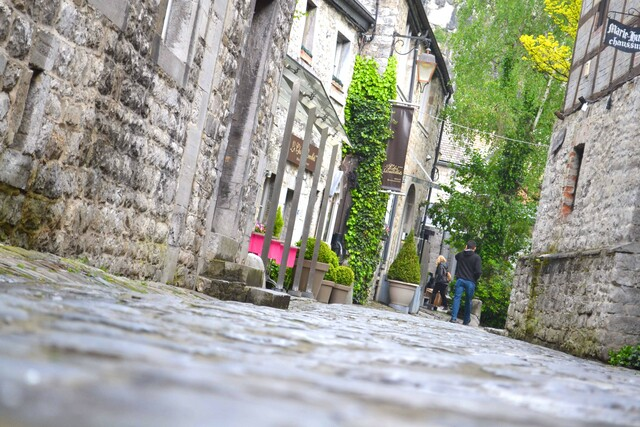
ちなみにワロン地方には「ベルギーの最も美しい村」に登録されている村がいくつもあるが、細かい審査基準があるようでデュルビュイは含まれていない。 「ベルギーの最も美しい村」たちも訪れてみたいのだが、調べたかぎり電車と徒歩でたどり着ける村がひとつとしてない・・・。 たいていの村々に公共交通機関でたどり着けてしまうドイツのありがたみを感じた。
ブリュッセルの定番観光地、グランプラス。 どうして近世以前はこんなに壮大な芸術的建築物がたくさん作られたのに現代ではそれが起きないのか・・・と考えてみたのだが、 「資本の発明」と「身分制の解体」が大きく作用している気がする。 資本（＝将来への投資によって経済を成長させ貨幣を自己増殖させる論理）が発明される前は、 貨幣や富を投資するという発想やそれを実現する金融市場がなかったので、支配階級はどこかで貨幣や富を消費する必要があった（貯め込んでもしかたない）。 それがどこに向かったかというと、当時は身分制が社会規範として機能していたので、支配階級はその身分と権威を顕示する必要があり、 （宗教とも連動して）宮殿・服飾・芸術作品などの地位表示財へ莫大な貨幣や富が注ぎ込まれていった・・・というロジックが近世以前の芸術作品を支えていたように思う。 資本が発明され身分制が解体されたいま、国がこれを作ろうとしたら「無駄遣い」と言われるに決まっているのだが、 こういう芸術作品が生み出されなくなったのは残念である。どうすれば人類は再び壮大な芸術作品を作り始めるのだろうか・・・。
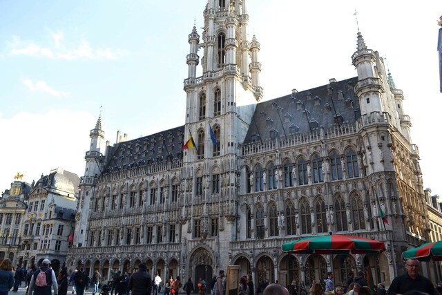